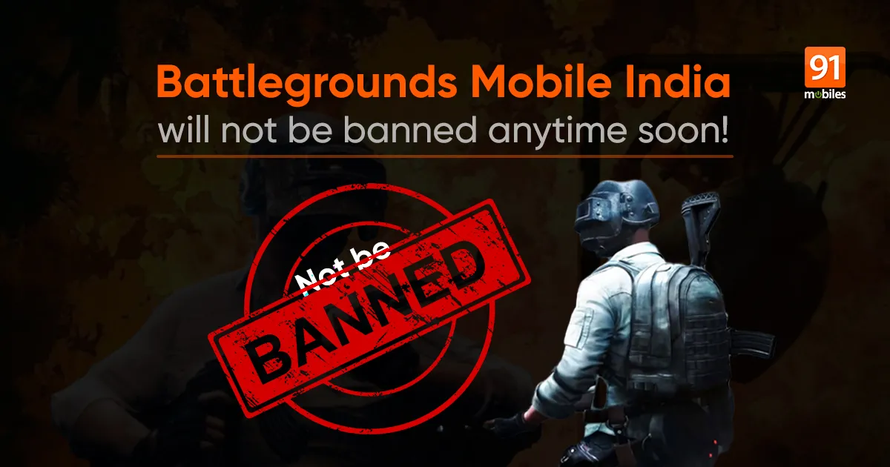

🔫Battleground mobile india(BGMI) should be banned or not?🔫
INTRODUCTION:
Battlegrounds Mobile India is a player versus player shooter game in which up to one hundred players fight in a battle royale, a type of large-scale last man standing deathmatch where players fight to remain the last alive.
Battlegrounds Mobile India (in short form BGMI,previously known as PUBG Mobile India) is a version of PUBG Mobile,
sexclusively for players in India.It is an online multiplayer battle royale game developed and published by Krafton.
Battlegrounds Mobile India is a player versus player shooter game in which up to one hundred players fight in a battle royale,
a type of large-scale last man standing deathmatch where players fight to remain the last alive.Players can choose to enter the match solo, or as a small team of upto four.
On 2 September 2020,the Ministry of Electronics and Information Technology, Government of India banned PUBG Mobile along with 117 Chinese applications stating that the apps were engaged in activities which were prejudicial and threat to sovereignty and integrity of India, defence of India, security of the state and public order under Section 69A of the Information Technology Act.
What are the advantages and disadvantages of playing BGMI games 2022?🤔
There are many advantages and disadvantages to playing BGMI games. In which the benefits include having fun by playing BGMI games and earning money from BGMI games. The same disadvantages include children becoming irritable by playing BGMI games, spending money in BGMI games and having a bad effect on the eyes by playing BGMI. By which one can understand the advantages and disadvantages of BGMI.
# Disadvantages 😩 of playing Battlegrounds Mobile India(BGMI)
Kids getting irritable😡 from playing BGMI games:
Friends, you must have seen children playing a lot of games. When any player whether it is a child or an elder. While playing Bgmi, he starts shouting at anything. Gets angry immediately when someone asks anything. In the game, they become very irritated when they make any mistake or get killed by the enemy. Especially this irritability has been seen in children, which is a very bad problem.
Not listening🙉 to anyone while playing BGMI games.
While playing the game, all the players get so much fun in the game. Due to which
they do not know anything about what is going on around them. While playing bgmi
game, bgmi player does not listen to anyone because he takes the game as a
serious life. In which he wants to play the game in any way. They are not aware
of any kind of atmosphere around them.
Attraction😍 of any game.
Friends, in today’s time the game is being made so good that it can be played easily in any device. Also everyone can get their favorite game. Different games have been made for this
But many boys or girls instead of enjoying in online games or bgmi, start playing the game by taking it seriously. In which the main reason is win or loss to appear in the profile of the game or to keep the highest rank of any game. Due to which the attraction of the game becomes on the player and it keeps on increasing continuously.
Bad effect on eyes😵 due to playing BGMI.
Playing Bgmi or any game for enjoyment is very beneficial because if any person is
under any tension, there is any kind of stretch on his mind, then it can be easily
reduced by playing any game. The same if the same game is played continuously
day and night, there is a bad effect on the eyes and the eyes of many players also
get damaged. To avoid this, we should play any game regularly or for a short time.
Having a bad effect🙍 on the brain when playing BGMI.
Playing BGMI games for a long time has a bad effect on the brain. Many players play BGMI game from 2 to 3 o’clock in the
night due to which their sleep is not complete and there is a bad effect on the mind of that player. However, this happens with
children who play a lot of games.

Spending money💵 in BGMI games.
Many items in the BGMI game are given for free and many items are given with
money, for which many players spend money in the game. Which gradually the
player gets used to which is a very bad thin
# Advantages 😎 Of Playing Battlegrounds Mobile India(BGMI)
Be entertained by playing BGMI games.
There are many disadvantages to playing the game, but there are many
advantages as well. Including having fun by playing BGMI games. Anyone can play
bgmi game anywhere for fun. Its most important thing is that this game can be
easily played with any friend.
BGMI increases the thinking ability of the player to play the game.
Friends, on playing any game, the ability of the player to understand increases.
Different tasks are given in many games, to complete which all players develop
their thinking skills.
BGMI is an online game in which the player has to complete many tasks.
Due to which the equality of thinking and understanding of all the players is developedEarn money🤑 playing BGMI games.
It is easy to earn money by playing BGMI games. At present, many players earn money
just by playing the game. There are different ways to earn money from BGMI games.
Many BGMI players on YouTube earn money by showing their game play.
This is the biggest and main advantage of BGMI games.Bringing a sense of unity👬 from playing BGMI games.
The player develops a sense of unity by playing the BGMI game. Players get to learn something new knowingly or
unknowingly. The ability to talk to anyone is developed while playing the game.
Sharpening of vision🤓 by playing BGMI games.
There are many benefits to playing any game for a short period of time. But playing them for a long time gives rise
to many disadvantages. While playing the BGMI game, there are many changes
in the game that the player faces.
Due to which the eyes become sharp and focus more on any main point. Which is its main advantage.
This article depends on the opinion of the author. Whose absolute veracity cannot
be confirmed at all. The advantages and disadvantages of any game depend on the player.
The benefits described in this article are experienced for a player playing for a
regular time.
And the losses are reported for the player playing day and night. In which there is
no fault of any game.